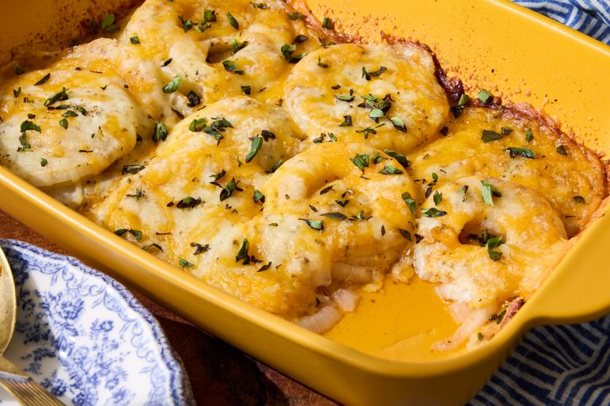

Home
Tennessee Onions

Description
Tennessee Onions are a delicious baked onion dish featuring sweet onions topped with a creamy, cheesy sauce.
Ingredients
- 3 sweet onions, sliced into 1/4-inch slices
- 1 1/2 teaspoons Cajun seasoning, or more to taste
- 1 teaspoon garlic powder
- 4 tablespoons butter, cut into 6 slices
- 1 cup shredded Cheddar cheese
- 1 cup shredded mozzarella cheese
- 1/2 teaspoon dried oregano
- 1/2 grated Parmesan cheese
Steps
- Gather the ingredients. Preheat the oven to 350 degrees F (175 degrees C).
- Arrange 1/2 of the onions on the bottom of a 9x13-inch casserole dish.
Sprinkle with half the Cajun seasoning and half the garlic powder.
Repeat with remaining onions, seasoning, and garlic powder.
- Arrange butter on top of the onions and top evenly with Cheddar and mozzarella cheese. Sprinkle oregano over cheese and top with Parmesan cheese.
- Bake in the preheated oven until onions are tender and cheese is melted, bubbly, and golden brown around the edges, about 35 minutes.